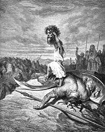

Seven Davids Who Slew the Philistine Goliath
David Sarnoff Would be Proud

Television is in the midst of a renaissance, though renaissance isn't exactly the right
word, since it implies a preceding age of excellence. TV has never known an era of
quality. This birth was magical, like Minerva sprung from the head of Jupiter. Suddenly
daytime soaps, quiz shows and situation comedies with their embarrassing laugh tracks,
became, well, laughable, depressing exihibits of Philistine vulgarity and American slob
culture. Quality television was finally making its long-awaited debut. It began a decade
earlier with several literary productions by the BBC broadcast by PBS, i.e. British
imports; the American efflorescence in mainstream TV is comparatively recent. Apropos the
renaissance, I once asked a friend why so many of the best TV shows today were conceived,
written and produced by men named 'David.' E.g.,
1. David Hollander (The Guardian)
2. David Kelly (L.A. Law, Chicago Hope, etc.)
3. David Lynch (
4. David Chase (Northern Exposure, The Sopranos)
5. David Milch (Deadwood)
6. David Shore (House)
7. David Simon (The Wire)
She opined that they were probably Jewish, 'David' being a common Old Testament name.
She is undoubtedly correct. But let's not forget those other Jewish writers mistakenly
named Aaron Sorkin (West Wing) and Matthew Weiner (Mad Men).
(Strictly speaking David Mamet doesn't write for television and it's unlikely that David
Kelly is Jewish.